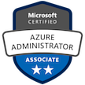

Certifications
Professional Scrum Master™ I (PSM I)

Azure Fundamentals (AZ-900)

CompTIA Security+ ce Certification

Azure Administrator Associate (AZ-104)
Experience
MSCI Inc.
Information Security Engineer • November 2023 - Present
I transitioned to the MSCI Security Engineering team following the completion of the Burgiss acquisition. After joining the team, I assumed responsibilities centered around working with Purview and Tessian, an AI-based cloud email security tool, to enhance our security posture.
Burgiss (acquired by MSCI Inc.)
Cloud Administrator • May 2023 - November 2023
Burgiss was acquired by MSCI in August of 2023 and renamed to MSCI Private Capital Solutions. After joining Burgiss, I assumed responsibilities centered around working with Purview DLP, Information Protection, Microsoft Sentinel, and SentinelOne, to enhance the organization's security posture.
Nuance Communications Inc. (acquired by Microsoft)
Senior QA Engineer • January 2008 - October 2021
At Nuance, I held a senior role in managing testing processes, mitigating risks, and ensuring the delivery of high-quality applications across the Healthcare, Insurance, Finance, Banking, and Service industries. I spearheaded efforts to enhance operational efficiency by establishing streamlined processes and creating technical documentation for Digital (Nina/Live Chat) Projects, resulting in a notable improvement in the quality of tested applications.
Education
Bachelor of Science in Computer Engineering
NJIT (Newark,NJ)
Master of Science in Internet Engineering
NJIT (Newark, NJ)
Home Lab Projects
A Cloud Guru Resume Challenge - Azure
Blog | Github | May 2022 - June 2022
The Cloud Resume Challenge is a resume project, which helps build and demonstrate skills fundamental to pursuing a career as a cloud engineer. It helped me gain hands-on experience with Azure cloud and incorporated many of the skills that cloud engineers use in their daily job.
Honeypot Virtual Machine with Azure Sentinel
This project was performed to setup Azure Sentinel (SIEM) and connect it to a virtual machine, which is operating as a honeypot. The honeypot was set up to observed live attacks from around the world. Finally, I used custom PowerShell script to look up the attackers Geolocation information and plot it on the Azure Sentinel Map.
Gatsby Blog Site
This project was performed to setup a site where I can talk about my experiences with my cloud projects. I used Gatsby to create a blog site and then deployed and configured a static web site using Azure Static Web Apps.